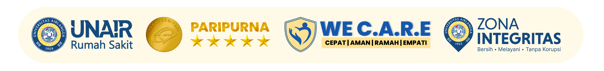

ICU
SMART
CDSS
Integrated Clinical Decision Support System for Intensive Care
Predict Risk. Prevent Harm.
👤 Identitas
⚠️ Morse Fall Scale
Riwayat Jatuh (3 bulan terakhir)
Tidak
Ya
Diagnosis Sekunder (>1 diagnosis medis)
Tidak
Ya
Alat Bantu
Tidak / Bedrest / Dibantu perawat
Tongkat / Walker
Berpegangan furniture
Terpasang IV / Infus
Tidak
Ya
Gaya Berjalan
Normal / Bedrest / Kursi roda
Lemah
Terganggu / tidak stabil
Status Mental
Sadar akan kemampuan
Overestimate / lupa keterbatasan
Hitung Morse
🛏️ Skala Braden
Persepsi Sensorik
1 = Tidak respons
2 = Sangat terbatas
3 = Sedikit terbatas
4 = Normal
Kelembaban
1 = Selalu lembab
2 = Sering lembab
3 = Kadang lembab
4 = Jarang lembab
Aktivitas
1 = Bedrest
2 = Kursi
3 = Jalan terbatas
4 = Sering berjalan
Mobilitas
1 = Imobilisasi
2 = Sangat terbatas
3 = Sedikit terbatas
4 = Bebas
Nutrisi
1 = Sangat buruk
2 = Kurang
3 = Cukup
4 = Baik
Gesekan & Geser
1 = Masalah besar
2 = Masalah potensial
3 = Tidak ada masalah
Hitung Braden
🧠 RASS (Richmond Agitation-Sedation Scale)
Pilih Skor RASS
-5 = Tidak respons (tidak ada respon terhadap suara/nyeri)
-4 = Sedasi dalam (respon minimal terhadap nyeri)
-3 = Sedasi sedang (respon terhadap suara tanpa kontak mata)
-2 = Sedasi ringan (kontak mata singkat)
-1 = Mengantuk (kontak mata >10 detik)
0 = Sadar & tenang
+1 = Gelisah
+2 = Agitasi
+3 = Agitasi berat
+4 = Sangat agitasi / agresif
Hitung RASS
💢 BPS (Behavioral Pain Scale)
Ekspresi Wajah
1 = Relaks
2 = Tegang
3 = Grimace (mengerut)
4 = Meringis jelas
Gerakan Ekstremitas Atas
1 = Tidak ada gerakan
2 = Fleksi ringan
3 = Fleksi kuat / menarik
4 = Tarikan kuat / melawan
Adaptasi Ventilator / Respons terhadap Ventilator
1 = Toleransi ventilator
2 = Batuk ringan
3 = Melawan ventilator
4 = Tidak sinkron ventilator
Hitung BPS
😖 Skala Nyeri VAS (0–10)
Skor Nyeri (0 = tidak nyeri, 10 = sangat nyeri)
0 😄
Analisis Nyeri
📊 APACHE II (Full Clinical)
Tidak ada
Non-operatif / operasi elektif
Operasi emergensi / syok
Hitung APACHE II
⚖️ Estimasi Antropometri ICU
Usia (tahun)
Tinggi Lutut / Knee Height (cm)
Lingkar Lengan Atas / MUAC (cm)
Jenis Kelamin
Pria
Wanita
Hitung Antropometri ICU
🍽️ Kebutuhan Kalori Harian
Berat Badan (kg)
Kondisi Klinis
Normal (rawat inap biasa)
Stres ringan (post op, infeksi ringan)
Stres sedang (sepsis, trauma)
Stres berat (ICU, ventilator, luka bakar)
Status Nutrisi
Normal
Overweight / obesitas
Malnutrisi
Hitung Kebutuhan
🏆 SMART ICU CLINICAL SUMMARY
🔍 Generate Clinical Summary